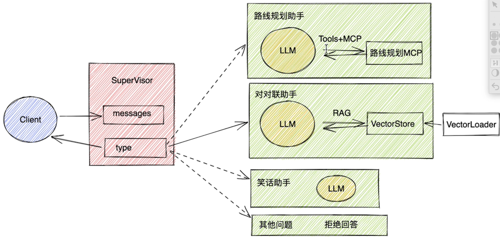

LangGraph · Multi-Agent LangGraph 第六课：构建多 Agent 智能体 记录一个由 supervisor 分发任务、多个 Agent 协作处理的智能体结构。 begc 2026.07.11 1 min read 大模型学习  通过LangGraph构建智能体 这个机器人可以通过一个supervisor节点，对用户的输入进行分类，然后根据分类结果，选择不同Agent节点进行处理。接下来每个Agent节点，都可以选择不同的工具进行处理，最后将处理结果汇总，返回给supervisor节点。supervisor节点再将结果返回给用户。